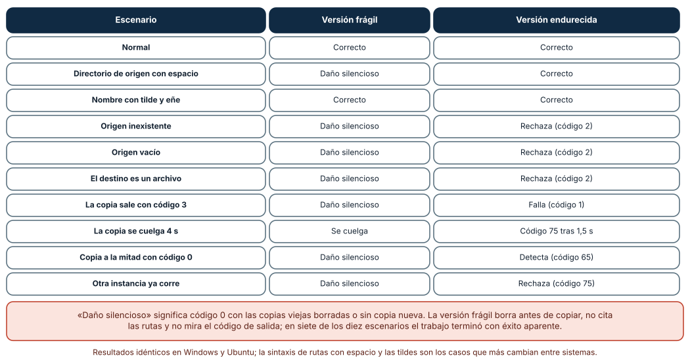
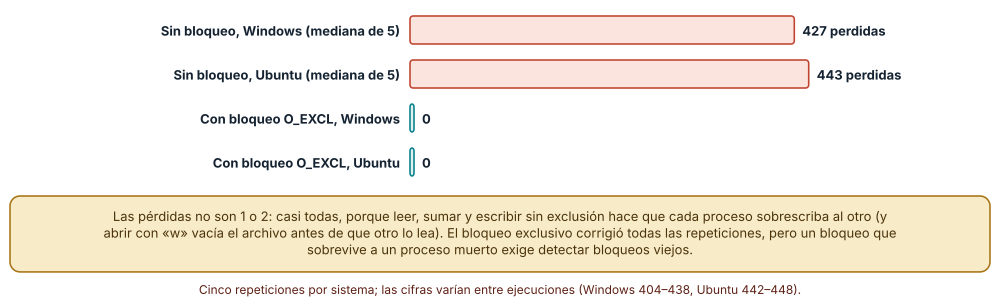
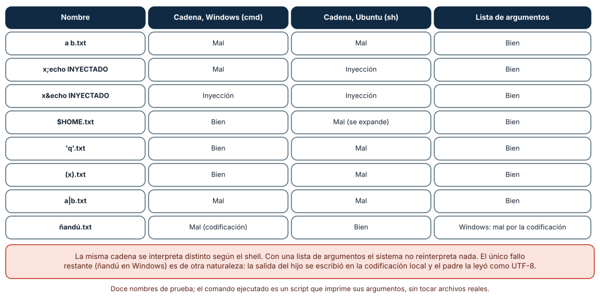

← SE-226 — Telemetría opt-in y privacidad en herramientas · ↑ Parte 18 · 📚 Índice completo · 🌐 Portal · SE-228 — Proyecto: herramienta operable multiplataforma →
Punto profesional y fundamento pedagógico
Punto profesional. El taller existe para recibir una automatización que «funciona en mi máquina», inyectarle los fallos que sufrirá en producción y endurecerla hasta que cada uno termine en un rechazo ruidoso con el estado intacto, aplicando juntas las técnicas de SE-217 a SE-226.
Por qué aparece aquí. Se sitúa después de Telemetría opt-in y privacidad en herramientas (SE-226) y antes de Proyecto: herramienta operable multiplataforma (SE-228): las diez clases anteriores dieron mecanismos por separado; el taller las combina sobre un caso concreto y mide el resultado, y deja los hallazgos y las pruebas que SE-228 integrará en un paquete.
Error conceptual que debe corregir. Creer que endurecer es «añadir manejo de errores» y que si el camino feliz funciona el resto es una cuestión de mala suerte. Los fallos de una automatización no son raros: son un conjunto finito y enumerable —entrada ausente, ruta con espacios, herramienta colgada, otra instancia, copia a medias— y se inyectan.
Secuencia de aprendizaje. Antes de leer la solución, predices en cuántos de diez fallos una copia de seguridad frágil termina con éxito aparente y daña las copias existentes; después los inyectas, endureces y repites, y pruebas dos fallos más profundos: la actualización perdida entre procesos y el citado de argumentos. La secuencia usa predicción, explicación propia, contraste y recuperación. ICAP distingue participación de construcción de conocimiento; How People Learn II exige conectar conocimiento previo, contexto y transferencia; la práctica de recuperación respalda producir de nuevo la explicación tras una demora; y Education for Life and Work exige devolución que explique la causa del error.
Evidencia de aprendizaje. hardening-log.md con la lista de debilidades encontradas, la matriz de diez fallos antes y después, la medición de la actualización perdida con y sin bloqueo y el cuadro de citado. Debe contener predicción previa, observación, explicación causal, contraejemplo y qué fallo queda sin cubrir.
Límite de la conclusión. La automatización, las copias y los diez fallos son del autor; la herramienta de copia es un script de Python que simula fallos con una variable de entorno; el bloqueo es de archivo en un equipo, no distribuido; no se probaron permisos, disco lleno real, red ni antivirus.
Trazabilidad fuente → afirmación
| Fuente primaria u oficial | Afirmación que respalda | Lo que no prueba | |
|---|---|---|---|
Python: subprocess y consideraciones de seguridad | Advierte de la inyección de comandos con shell=True y recomienda pasar una lista de argumentos. | No dice cómo se cita en cada shell. | |
| OWASP: Command Injection | Describe la inyección de comandos: datos que el intérprete trata como órdenes. | No es específico de Python. | |
| CWE-78: OS Command Injection | Cataloga la neutralización incorrecta de elementos especiales en comandos del sistema. | No mide la frecuencia en un código concreto. | |
| ShellCheck wiki | Explica errores típicos de los guiones de shell: variables sin comillas, ignorar códigos de salida. | Es una herramienta de análisis, no un estándar. | |
Python: os y O_EXCL | Documenta `O_CREAT \ | O_EXCL`: crear un archivo falla si ya existe, base de un bloqueo. | No resuelve los bloqueos huérfanos. |
Antes de empezar
Recupera lo aprendido en SE-226: lo que no debe salir se prueba con casos negativos. La pregunta activa es: ¿qué fallos va a sufrir esta automatización, cómo los provoco a propósito y qué estado deja cada uno?
Prerrequisitos
- Haber completado
SE-226o poder explicar cómo se prueba una compuerta con casos negativos. - Python 3.11 o posterior; WSL2 con Ubuntu para el segundo sistema.
- Trabajar en directorios temporales y con archivos sintéticos.
Problema auténtico
La copia de seguridad de notas es un script de cuarenta líneas que alguien escribió hace dos años: borra las copias más antiguas, copia el archivo del día con una orden de shell y termina. Funciona. Una noche el directorio de origen cambió de nombre a «mi origen»; el script no copió nada, borró una copia vieja y terminó con éxito. Nadie lo supo hasta que hizo falta restaurar. El taller reconstruye esa noche, diez veces, con diez fallos distintos.
Objetivos observables
Al terminar podrás:
- inventariar las debilidades de una automatización (entrada, salida, procesos, concurrencia, estado) y priorizarlas por daño;
- inyectar fallos de forma controlada y clasificar el resultado en correcto, ruidoso con daño, silencioso con daño o colgado;
- endurecer la automatización con validación previa, verificación, tiempo límite, bloqueo y reemplazo atómico, y volver a medir;
- demostrar con una prueba de concurrencia la pérdida de actualizaciones y su corrección con un bloqueo;
- citar argumentos de procesos hijos sin depender de un shell.
Mapa conceptual
Ver la notación fuente del diagrama
flowchart LR
F[Automatización frágil] --> I[Inyección de fallos]
I --> M[Matriz de resultados]
M --> D[Debilidades priorizadas]
D --> H[Endurecimiento]
H --> I2[Reinyección]
I2 --> R[Matriz tras el cambio]El mapa se lee como un ciclo: se mide el estado actual, se endurece y se vuelve a medir con los mismos fallos. El ciclo termina cuando cada fallo tiene un resultado esperado y una prueba. No describe un orden de implementación.
Temas y por qué importan
| Tema | Por qué cambia una decisión profesional | Evidencia mínima |
|---|---|---|
| Inyección de fallos | Convierte «puede pasar» en «pasa y lo vemos». | Predicción, traza causal y contraejemplo de Inyección en hardening-log.md |
| Validación y verificación | Rechazar antes de dañar y comprobar después de hacer. | Predicción, traza causal y contraejemplo de Validación en hardening-log.md |
| Tiempo límite y bloqueo | Un proceso colgado o duplicado no debe romper el sistema. | Predicción, traza causal y contraejemplo de Límites en hardening-log.md |
| Concurrencia | Leer-modificar-escribir sin exclusión pierde casi todo. | Predicción, traza causal y contraejemplo de Concurrencia en hardening-log.md |
| Citado de argumentos | Una cadena la reinterpreta cada shell de una manera. | Predicción, traza causal y contraejemplo de Citado en hardening-log.md |
Conceptos y decisiones
1. Un taller de endurecimiento tiene método
Primero se lee la automatización buscando debilidades conocidas: rutas sin comillas, códigos de salida ignorados, borrado antes de verificar, ausencia de tiempo límite y de bloqueo, escritura en el sitio. Segundo, se define el resultado esperado de cada fallo posible: ¿qué debe quedar si no hay origen? ¿Y si la copia está a medias? Tercero, se inyecta cada fallo y se compara. Cuarto, se endurece una debilidad por vez y se vuelve a inyectar. El método hace visible lo que antes era intuición y deja pruebas que evitan que vuelva.
2. Clasificar los resultados
Cada ejecución con un fallo cae en una de cuatro clases: correcto (éxito completo o rechazo ruidoso con el estado intacto), ruidoso con daño (falla y deja el sistema peor), silencioso con daño (termina con éxito aparente y deja el sistema peor) y colgado (no termina). La clase más peligrosa es la tercera: no deja rastro. Por eso el éxito aparente después de un fallo es la métrica central del taller. Y por eso cada operación termina con una verificación de que el resultado es el esperado, no con la ausencia de excepciones.
3. Validar antes, verificar después
Antes de tocar nada: el origen existe y no está vacío, el destino es un directorio, hay espacio (o al menos se detecta el fallo de escritura). Después de la copia: el tamaño coincide, el resumen coincide, el archivo está completo. Y el orden de las acciones destructivas importa: primero se crea y se verifica lo nuevo; solo entonces se retira lo viejo. La versión frágil hacía lo contrario, y por eso una copia fallida costaba una copia existente.
4. Tiempo límite, bloqueo y reemplazo atómico
Una herramienta externa puede colgarse: se le pone un tiempo límite y su vencimiento es un fallo temporal (código 75). Dos instancias simultáneas pueden pisarse: se toma un bloqueo (crear un archivo con O_CREAT | O_EXCL, que falla si ya existe) y se libera en un finally; un bloqueo huérfano, tras una caída, necesita detección de antigüedad. Y la copia se escribe en un temporal y se publica con un reemplazo atómico (SE-224), para que nadie vea una copia a medias.
5. El citado es del shell, no de Python
Cuando se construye una orden como cadena y se ejecuta con shell=True, la interpreta el shell del sistema: cmd.exe en Windows, sh en Linux. Cada uno trata distinto los espacios, ;, &, |, $, las comillas y los paréntesis. Un nombre de archivo con uno de esos caracteres puede partir el argumento o ejecutar otra orden (inyección). La defensa es no usar el shell: pasar los argumentos como una lista que el sistema entrega al proceso sin reinterpretar. Si hace falta un shell, se cita con la función que corresponde a ese shell y se valida el valor.
Diez fallos, dos versiones
Se construyó una copia de seguridad en dos versiones y se inyectaron diez escenarios: normal, directorio de origen con espacio, nombre con tilde y eñe, origen inexistente, origen vacío, destino que es un archivo, herramienta de copia que sale con 3, herramienta que se cuelga 4 s, copia que queda a la mitad y sale con 0, y otra instancia ya en marcha. La versión frágil (borra antes de copiar, no cita rutas, ignora el código de salida, sin tiempo límite ni bloqueo) acertó en 2 escenarios, se colgó en 1 y causó daño silencioso en 7. La versión endurecida acertó en los 10: rechazó con código 2 (origen inexistente, vacío, destino inválido), 1 (la copia sale con 3), 65 (la copia a medias, detectada por el resumen) o 75 (colgada tras 1,5 s, o ya hay otra instancia), siempre con las tres copias existentes intactas.
fd = os.open(lock, os.O_CREAT | os.O_EXCL | os.O_WRONLY) # falla si ya hay otra instancia
try:
r = subprocess.run([PY, HELPER, src, tmp], timeout=1.5) # lista, sin shell, con tiempo límite
if r.returncode != 0: return 1
if sha256(tmp) != sha256(src): return 65 # verifica antes de publicar
os.replace(tmp, final) # publica; solo entonces limpia lo viejo
finally:
os.close(fd); os.remove(lock)
Cómo leer la figura. Cada fila es un fallo; las columnas comparan el resultado de las dos versiones. Dónde deja de valer: los diez fallos los eligió el autor; un caso no inyectado (permisos, disco lleno real, un antivirus que bloquea) puede romper la versión endurecida. Los resultados fueron idénticos en Windows y en Ubuntu, pero el escenario del nombre con tilde depende de la codificación de la consola.
Actualizaciones perdidas entre procesos
Tres procesos incrementan 150 veces cada uno un contador guardado en un archivo (leer, sumar, escribir): se esperan 450. Sin bloqueo, en cinco repeticiones, se perdieron en Windows 404, 424, 427, 433 y 438 actualizaciones (mediana 427) y en Ubuntu 442, 443, 443, 443 y 448 (mediana 443): casi todas, porque abrir el archivo con "w" lo vacía antes de que otro proceso lea y cada uno vuelve a escribir un valor viejo. Con un archivo de bloqueo O_EXCL, las cinco repeticiones perdieron 0 en ambos sistemas.

Cómo leer la figura. Cada barra es la mediana de cinco repeticiones; la coral es sin bloqueo y la teal con él. Dónde deja de valer: el contador en un archivo exagera el efecto por el vaciado al abrir; con un archivo temporal y reemplazo atómico las pérdidas serían menores pero no nulas. El bloqueo es de un equipo; entre máquinas hace falta otro mecanismo, y un bloqueo huérfano tras una caída no se midió.
El mismo nombre, tres intérpretes
Se pasaron doce nombres de archivo a un proceso hijo que imprime sus argumentos, una vez como cadena con shell=True y otra como lista. Con shell=True, seis nombres se interpretaron mal en Windows y ocho en Ubuntu, con una inyección de comando en Windows (x&echo INYECTADO) y dos en Ubuntu (con ; y con &). Entre los casos: a b.txt se partió en dos argumentos en ambos; $HOME.txt se expandió en Ubuntu y no en Windows; 'q'.txt y (x).txt fallaron en Ubuntu y no en Windows. Con la lista de argumentos, los doce fueron correctos en Ubuntu y once en Windows: el fallo restante, ñandú.txt, fue de codificación de la salida del hijo (la consola usa la codificación local y el padre la leyó como UTF-8), no del citado.

Cómo leer la figura. Cada fila es un nombre; las tres columnas son el resultado con la cadena en Windows, con la cadena en Ubuntu y con la lista. Dónde deja de valer: son doce nombres elegidos por el autor y dos shells; PowerShell, bash en Windows u otros tienen reglas propias. La última fila es un recordatorio de que el citado no es el único problema de los nombres no ASCII.
Definiciones de trabajo
- inyección de fallos: provocar deliberadamente una condición de error para observar cómo responde el sistema.
- fallo silencioso: terminación con éxito aparente después de un error que dejó el sistema en peor estado.
- endurecimiento: conjunto de cambios que hace que una automatización rechace o tolere condiciones adversas sin dañar el estado.
- bloqueo (lock): mecanismo de exclusión mutua; aquí, un archivo creado en exclusiva.
- inyección de comandos: ejecución de órdenes no previstas porque un dato se interpretó como parte de la orden.
Las definiciones son operativas para la herramienta notas. No convierten términos con historia más amplia en sinónimos y deben contrastarse con la documentación primaria enlazada al final.
Ejemplo mínimo
El fragmento muestra cómo una ruta con espacio rompe una orden en forma de cadena. Antes de ejecutarlo, predice cuántos argumentos ve el hijo en cada caso.
import subprocess, sys
hijo = "import sys; print(len(sys.argv) - 1)"
nombre = "mi origen.txt"
print(subprocess.run(f'"{sys.executable}" -c "{hijo}" {nombre}', shell=True, capture_output=True, text=True).stdout.strip())
print(subprocess.run([sys.executable, "-c", hijo, nombre], capture_output=True, text=True).stdout.strip())Imprime 2 y 1: la cadena se partió en el espacio y la lista no. Añade ; y observa qué más cambia; registra versión y sistema.
Ejemplo profesional
El equipo adopta una lista de comprobación de endurecimiento para cada automatización: validar entradas antes de actuar, listas de argumentos sin shell, tiempo límite en cada proceso externo, bloqueo con O_EXCL y limpieza en finally, escritura en temporal con reemplazo atómico, verificación por resumen, orden «crear y verificar, luego retirar», códigos de salida de SE-220 y un registro con inicio, fin y resultado. Una suite de diez fallos inyectados corre en cada cambio en Windows y en Ubuntu y falla si algún escenario termina con éxito aparente o con una copia menos. El registro del taller guarda la matriz antes y después.
Compara el caso normal con un origen movido, una herramienta colgada y dos instancias. El endurecimiento es apropiado cuando los tres terminan con un código distinto de 0 y las copias intactas; es peligroso cuando el único síntoma es que «hoy no hay copia nueva».
Práctica guiada
- Lee la automatización frágil y lista sus debilidades con la posible consecuencia de cada una.
- Predice en cuántos de diez fallos terminará con éxito aparente y daño.
- Implementa el inyector de diez fallos y clasifica cada resultado en las cuatro clases.
- Endurece una debilidad por vez y vuelve a ejecutar la matriz hasta que cada fallo sea correcto.
- Mide la actualización perdida de un contador con tres procesos, con y sin bloqueo.
- Pasa doce nombres difíciles como cadena y como lista y compara con el esperado.
- Pide a otra persona que reproduzca las dos matrices solo desde
hardening-log.md.
Ejercicios
- Bloqueo huérfano: una caída deja el archivo de bloqueo; diseña la detección por antigüedad y el riesgo de quitar un bloqueo de una instancia aún viva.
- Undécimo fallo: inventa un fallo que la versión endurecida no cubra (por ejemplo, el origen cambia durante la copia) y escribe el escenario y la defensa.
- Orden de acciones: reordena la versión frágil para que borre al final y calcula cuántos de los diez fallos dejan de causar daño solo con ese cambio.
- Citado en shell: si no queda más remedio que usar un shell, escribe la función de citado para
shy una prueba con los nombres difíciles.
Reto verificable
Entrega hardening-log.md con las debilidades, la matriz de diez fallos antes y después, la medición del contador con y sin bloqueo y la tabla de citado. Se aprueba si otra persona ejecuta el código desde un checkout limpio, obtiene la misma matriz (2 correctos, 1 colgado y 7 con daño silencioso en la versión frágil; 10 correctos en la endurecida), el mismo patrón de pérdidas (casi todas sin bloqueo, ninguna con él) y puede señalar un fallo que el taller no cubrió. No se aprueba por añadir try/except ni por «probar en mi máquina».
Caso conductor
La herramienta notas es el caso conductor de la Parte 18. El taller endurece su copia de seguridad con las técnicas de las clases anteriores: contrato de códigos (SE-220), tiempo límite y reinicios (SE-222), reemplazo atómico y reanudación (SE-224), verificación de integridad (SE-225) y compuerta de privacidad (SE-226). SE-228 reúne todo en un paquete operable. Cambia después un solo detalle, el tiempo límite de 1,5 s a 10 s, y revisa cuántos escenarios cambian y qué pasa con un cuelgue real de 8 s.
Preguntas frecuentes
¿Por qué inyectar fallos en lugar de revisar el código?
Porque la revisión descubre los fallos que ya imaginamos; la inyección descubre los que el código no maneja aunque nadie los imaginara. Y deja una prueba que se repite.
¿Cuántos fallos hay que inyectar?
Los que correspondan a las debilidades encontradas más los que el entorno ya produjo en incidentes pasados. Diez bien elegidos valen más que cien al azar; pero la lista nunca es completa y debe crecer con cada incidente.
¿Siempre hay que evitar shell=True?
Casi siempre. Su uso se justifica cuando se necesita una función del shell (redirecciones, comodines) que no se puede reproducir de otra manera, y entonces los valores externos se citan con la función del shell concreto y se validan.
¿Un bloqueo de archivo sirve entre máquinas?
No en general: depende del sistema de archivos y no es fiable en discos de red. Entre máquinas hace falta un servicio de coordinación o un mecanismo con garantías, y esa decisión excede esta clase.
Fallo controlado y diagnóstico
Reproduce el fallo clásico de la clase: éxito aparente tras borrar antes de copiar. Usa la versión frágil con el directorio de origen «mi origen».
Registra síntoma, entrada mínima, hipótesis, observación que descarta cada hipótesis, causa, corrección y prueba de regresión. Síntoma: el trabajo terminó con código 0, no existe copia nueva y falta una copia vieja. Hipótesis rivales: (a) el disco estaba lleno; (b) la herramienta de copia falló por un permiso; (c) la ruta con espacio partió el argumento y la copia no encontró el origen. Prueba: el hijo recibió dos argumentos en lugar de uno; el código de la copia (distinto de 0) se ignoró; el borrado ocurrió antes. Conclusión: la causa es la tercera, agravada por ignorar el código y por el orden de las acciones. Regresión: pasar una lista de argumentos, comprobar el código, verificar el resumen y retirar copias viejas solo tras publicar la nueva; añadir una prueba con un origen con espacio. No cambies a la vez el citado y el orden de las acciones.
Errores comunes y cómo corregirlos
| Síntoma | Causa probable | Corrección |
|---|---|---|
| El trabajo termina con 0 sin hacer nada | Se ignora el código de la herramienta externa | Comprobar el código y propagarlo |
| Se pierden copias existentes tras un fallo | Se borra antes de verificar lo nuevo | Crear y verificar primero; retirar después |
| Una ruta con espacio rompe la orden | Se construyó una cadena con shell=True | Lista de argumentos, sin shell |
| Dos instancias se pisan | No hay exclusión | Bloqueo con O_EXCL y limpieza en finally |
| El proceso externo se cuelga y bloquea el trabajo | No hay tiempo límite | timeout y código temporal |
Entorno y archivos clave
work/SE-227/
├── README.md
├── copia_fragil.py
├── copia_endurecida.py
├── experimentos/
│ ├── inyector.py
│ ├── contador.py
│ └── citado.py
└── evidence/hardening-log.mdEl README declara plataforma, versión de Python y comandos. Los experimentos usan solo la biblioteca estándar (subprocess, multiprocessing, hashlib, os) y se ejecutaron con CPython 3.12.9 en Windows 11 y 3.12.3 en Ubuntu bajo WSL2: la matriz de diez fallos fue idéntica; las pérdidas del contador y el citado difirieron por sistema y se informan como resultados.
Seguridad, ética y accesibilidad
- los experimentos operan en directorios temporales y con archivos sintéticos; nunca inyectes fallos sobre copias reales;
- la inyección de comandos de la tabla usa un
echoinocuo; no pruebes cargas que borren o descarguen nada; - una copia de seguridad es una promesa a las personas cuyos datos guarda: verifica que se puede restaurar, no solo que se creó;
- los registros del taller no deben incluir rutas reales ni nombres de usuario;
- respeta las licencias de las herramientas externas y atribuye las adaptaciones.
Puente hacia el trabajo con agentes
Un agente al que se le pide «hazlo robusto» suele envolver el script en try/except, imprimir «error» y devolver 1, sin separar tipos de fallo, sin verificar y manteniendo shell=True. Pídele la lista de debilidades, el inyector de diez fallos, la matriz antes y después, el orden «crear, verificar, retirar» y una ejecución en los dos sistemas. Revisa especialmente si alguno de los diez escenarios sigue terminando con éxito aparente y si se añadió algún mensaje que oculte el código de la herramienta externa.
Transferencia
Traslada el taller a otra automatización frágil (por ejemplo, un guion que sincroniza una carpeta con un servicio de almacenamiento de pruebas): lista sus debilidades, inyecta diez fallos y mide cuántos terminan con éxito aparente. La transferencia está lograda cuando puedes explicar qué parte del endurecimiento dependía del tipo de recurso y cuál era general, no cuando la lista de comprobación se parece.
Evaluación y evidencia
| Criterio | Evidencia para aprobar |
|---|---|
| comprensión | explicación de por qué el éxito aparente tras un fallo es el peor resultado |
| corrección | matriz reproducible de diez fallos antes y después |
| diseño | endurecimiento con validación, verificación, límite, bloqueo y reemplazo |
| diagnóstico | reproducción del fallo «borrar antes de copiar» con regresión |
| incertidumbre | declaración de qué fallos no se inyectaron |
| reproducibilidad | versiones, comandos, salida y límites declarados |
Fuentes
- Python:
subprocessy consideraciones de seguridad —shell=Truey listas de argumentos; autoridad: documentación de Python. - OWASP: Command Injection — inyección de comandos; autoridad: OWASP.
- CWE-78: OS Command Injection — catalogación de la debilidad; autoridad: MITRE.
- ShellCheck wiki — errores típicos en guiones de shell; autoridad: proyecto ShellCheck.
- Python:
os—O_EXCL,os.replaceyos.open; autoridad: documentación de Python. - Python:
multiprocessing— procesos del experimento del contador; autoridad: documentación de Python.
Cada fuente respalda el mecanismo indicado; ninguna demuestra que la lista de diez fallos sea la que tu automatización necesita. Esa afirmación depende de su historia de incidentes.
- Python:
hashlib— verificación de la copia por resumen. - Python:
tempfile— directorios temporales de las pruebas.
Límites y siguiente paso
Se ejecutaron tres experimentos en Windows y Ubuntu (WSL2): la matriz de fallos fue idéntica; el contador y el citado difirieron por sistema. Los diez fallos, las dos versiones y el contador son del autor; no se probaron permisos, disco lleno, red ni antivirus, ni bloqueos huérfanos. La siguiente clase reúne todo en un paquete operable y multiplataforma.
Glosario
- inyección de fallos: provocar deliberadamente una condición de error para observar cómo responde el sistema.
- fallo silencioso: terminación con éxito aparente después de un error que dejó el sistema en peor estado.
- endurecimiento: conjunto de cambios que hace que una automatización rechace o tolere condiciones adversas sin dañar el estado.
- bloqueo (lock): mecanismo de exclusión mutua; aquí, un archivo creado en exclusiva.
- inyección de comandos: ejecución de órdenes no previstas porque un dato se interpretó como parte de la orden.
← SE-226 — Telemetría opt-in y privacidad en herramientas · ↑ Parte 18 · 📚 Índice completo · 🌐 Portal · SE-228 — Proyecto: herramienta operable multiplataforma →